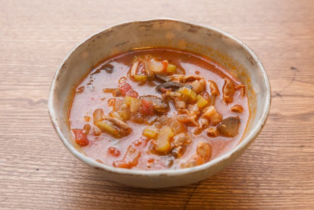

ミネストローネ

材料 2人分
- にんじん
- 40g
- 玉ねぎ
- 50g
- セロリ
- 20g
- にんにく
- 2片
- 豚肉
- 20g
- オリーブオイル
- 小さじ2
- カットトマト缶
- 100g
- 水
- 400ml
- コンソメ顆粒
- 小さじ2
- 塩胡椒
- 適量
作り方
1
にんじん、玉ねぎ、セロリは5mm厚さの色紙切りにします。
ニンニクはみじん切りにします。
豚肉は1cm幅に切ります。
2
オリーブオイルとにんにくを入れて、弱火で炒めます。
香りが立ってきたらベーコン、野菜を加え、中火で炒めます。
3
2がしんなりしたら、カットトマト缶、水、コンソメを入れ、中火で10分程煮込みます。
4
3の野菜が柔らかくなったら、塩胡椒を加え味を調えたら完成です。